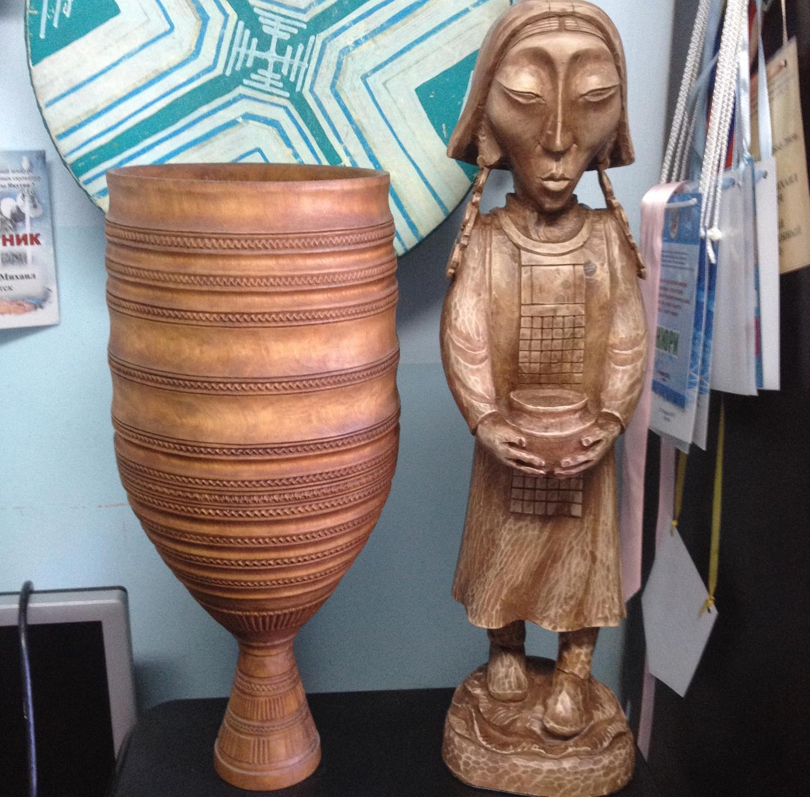
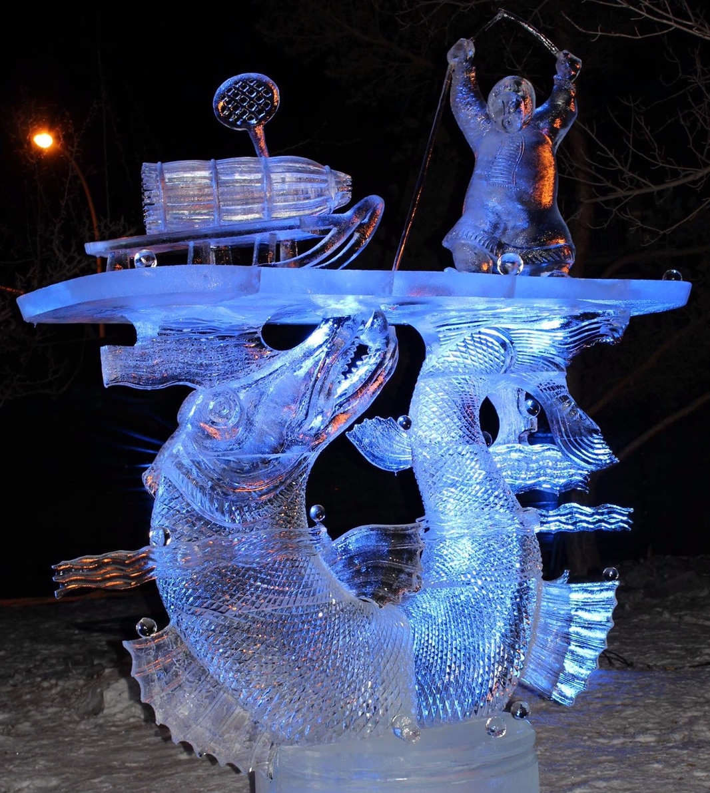
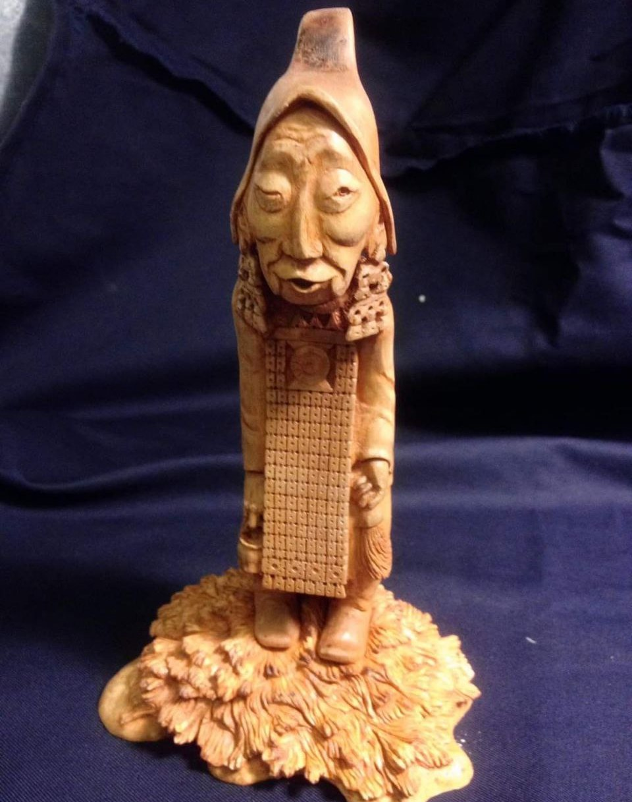

Egor Stepanov: Song of the white cranes, 2014 (ice carving) (with Alexey Andreev)
Lake Louise, AB, Canada, Alberta Егор Степанов: Песня белых журавлей, 2014 (ice carving) (with Alexey Andreev)
Lake Louise, AB, Canada, Alberta
Lake Louise, AB, Canada, Alberta Егор Степанов: Песня белых журавлей, 2014 (ice carving) (with Alexey Andreev)
Lake Louise, AB, Canada, Alberta
 Egor Stepanov: Song of the white cranes, 2014 (ice carving) (with Alexey Andreev)
Egor Stepanov: Song of the white cranes, 2014 (ice carving) (with Alexey Andreev)Lake Louise, AB, Canada, Alberta Егор Степанов: Песня белых журавлей, 2014 (ice carving) (with Alexey Andreev)
Egor Stepanov: Desired blue shore, 2016 (ice carving) (with Alexey Andreev)
Егор Степанов: Хаарыан хампа куех кытылым, 2016 (ice carving) (with Alexey Andreev)

Egor Stepanov: Choroon, 2015 (Sakha traditional bowl made of wood)
Alaas kyyһa, 2015 (birch wood carving) Егор Степанов: Choroon, 2015 (Sakha traditional bowl made of wood)
Right: Alaas kyyһa, 2015 (birch wood carving)
Alaas kyyһa, 2015 (birch wood carving) Егор Степанов: Choroon, 2015 (Sakha traditional bowl made of wood)
Right: Alaas kyyһa, 2015 (birch wood carving)

Egor Stepanov: Unprecedented catch, 2017 (ice carving) (with Alexey Andreev)
Егор Степанов: Unprecedented catch, 2017 (ice carving) (with Alexey Andreev)
 Egor Stepanov: Light breaking through the darkness, 2018 (wood carving) (with Alexey Andreev)
Егор Степанов: Light breaking through the darkness, 2018 (wood carving) (with Alexey Andreev)
Egor Stepanov: Light breaking through the darkness, 2018 (wood carving) (with Alexey Andreev)
Егор Степанов: Light breaking through the darkness, 2018 (wood carving) (with Alexey Andreev)
 Egor Stepanov: The Legend of Cholbon, 2021 (ice carving) (with Alexey Andreev)
Егор Степанов: The Legend of Cholbon, 2021 (ice carving) (with Alexey Andreev)
Egor Stepanov: The Legend of Cholbon, 2021 (ice carving) (with Alexey Andreev)
Егор Степанов: The Legend of Cholbon, 2021 (ice carving) (with Alexey Andreev)
 Egor Stepanov: Bride's dowry, horses - a symbol of Sakha (aluminum)
Egor Stepanov: Bride's dowry, horses - a symbol of Sakha (aluminum) gifts to guests at the wedding from the bride's parents Егор Степанов: Bride's dowry, horses - a symbol of Sakha (aluminum)
gifts to guests at the wedding from the bride's parents
 Egor Stepanov: Bride's dowry, horses - a symbol of Sakha (aluminum)
Egor Stepanov: Bride's dowry, horses - a symbol of Sakha (aluminum) gifts to guests at the wedding from the bride's parents Егор Степанов: Bride's dowry, horses - a symbol of Sakha (aluminum)
gifts to guests at the wedding from the bride's parents
Egor Stepanov: Suncatcher (horn carving)
Егор Степанов: Suncatcher (horn carving)
Egor Stepanov: Sunny (horn carving)
Егор Степанов: Sunny (horn carving)

Egor Stepanov: On Ysyakh, 2009 (wood carving)
Ysyakh is a traditional holiday of the Sakha people in midsummer Егор Степанов: On Ysyakh, 2009 (wood carving)
Ysyakh is a traditional holiday of the Sakha people in midsummer
Ysyakh is a traditional holiday of the Sakha people in midsummer Егор Степанов: On Ysyakh, 2009 (wood carving)
Ysyakh is a traditional holiday of the Sakha people in midsummer
Egor Stepanov: Sun dance, 2024 (ice sculpture)
Егор Степанов: Sun dance, 2024 (ice sculpture)
 Egor Stepanov: Sketches from different years
Егор Степанов: Sketches from different years
Egor Stepanov: Sketches from different years
Егор Степанов: Sketches from different years
Video interview with Egor Stepanov and Alexey Andreev (Sakha language)
Video interview with Egor Stepanov and Alexey Andreev (Sakha language)